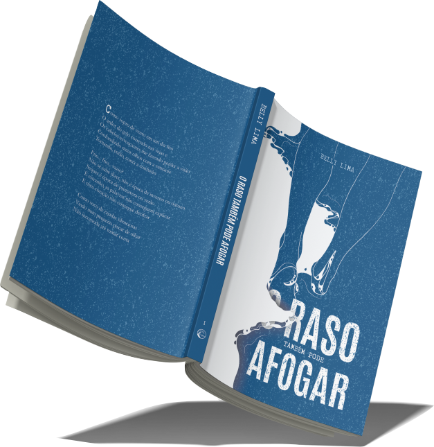
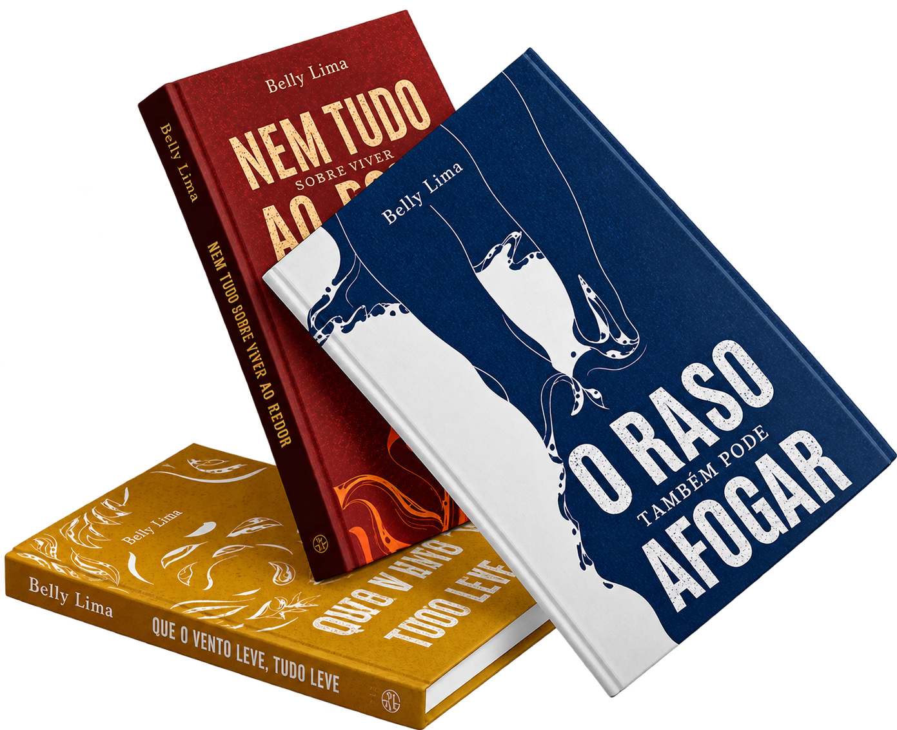
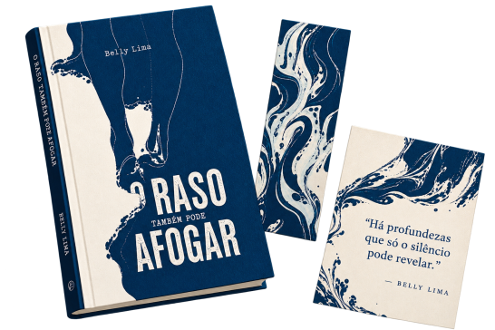
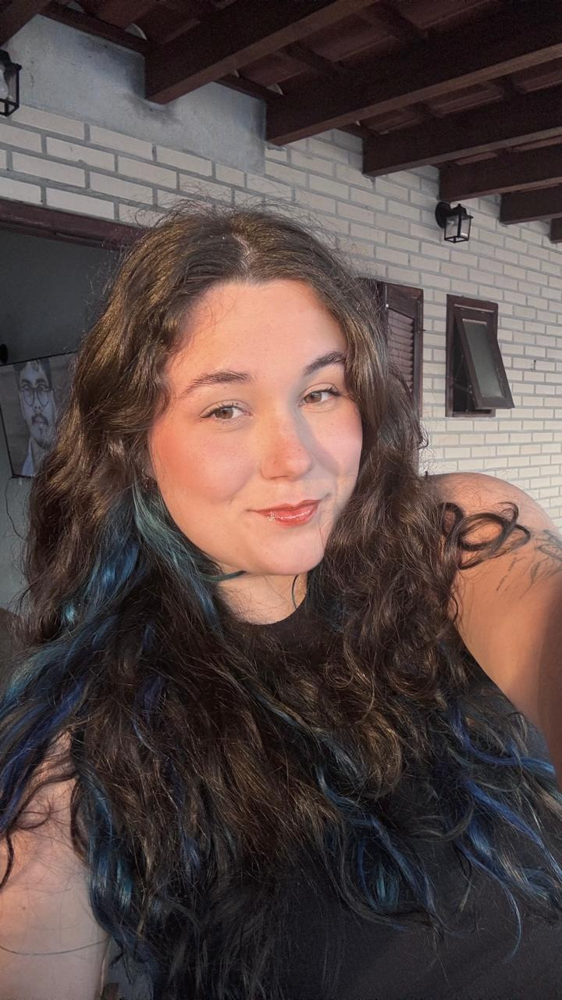

O Raso também pode Afogar
A todos aqueles que continuaram mesmo quando tudo dentro de si parecia desmoronar
Garanta seu exemplar
Sobre o livro
O Raso Também Pode Afogar é um convite para sentir o que nem sempre cabe em palavras. Entre versos e sentimentos, Belly Lima explora as inseguranças, os silêncios e a falsa sensação de segurança que encontramos na superfície.
Uma reflexão sobre aquilo que nos impede de mergulhar em nossas próprias experiências, revelando que nem sempre permanecer no raso significa estar a salvo.
Frio... frio... vazio?
Não se sabe dizer,
não é época de inverno ou outono
Sequer é época de primavera ou verãoÉ estranho,
— O Raso também pode afogar
as palavras não conseguem explicar
E meu coração não consegue decifrar

Processos
em versos
sobre sentir, transformar e continuar
Uma trilogia de poesia que percorre diferentes fases da experiência humana. Entre a água, o fogo e o vento, cada volume representa um momento dessa trajetória, atravessada por fragilidades, mudanças e recomeços.
A jornada começa com O Raso Também Pode Afogar, o primeiro volume da coleção, agora em pré-lançamento.
Os próximos capítulos dessa história ainda estão por vir...
Kit pré-lançamento
Garanta seu exemplar do primeiro volume e receba brindes exclusivos, além do livro autografado.
- Livro físico autografado
- Marcador de páginas exclusivo
- Cartão ilustrado com poema


Sobre a autora
Todos os poemas, que do meu eu mais sincero escrevi, nasceram de momentos em que apenas os pensamentos ou aquilo que de minha boca conseguia proferir não eram suficientes para expressar a intensidade de tudo o que existia dentro de mim.
Ajude essa história a ganhar vida
O Raso Também Pode Afogar está dando seus primeiros passos rumo à publicação. Como parte de um projeto acadêmico, esta etapa busca conhecer os futuros leitores e descobrir o interesse por sua primeira edição física. Ao realizar seu pré-cadastro, você entra para a lista de interessados e poderá receber, em primeira mão, novidades sobre o lançamento e acesso antecipado aos kits especiais com brindes exclusivos.
O cadastro é gratuito e não representa um compromisso de compra.
Faça seu
pré-cadastro
Seja uma das primeiras pessoas a receber novidades sobre o lançamento, condições especiais e a abertura da pré-venda.
- Receba novidades em primeira mão
- Condições especiais de lançamento
- Brindes exclusivos
Sua próxima história favorita começa com um simples “sim”. Reserve um instante para fazer seu pré-cadastro e venha acompanhar essa jornada desde o começo.
Quero fazer meu pré-cadastroÉ rapidinho, gratuito e sem compromisso de compra.